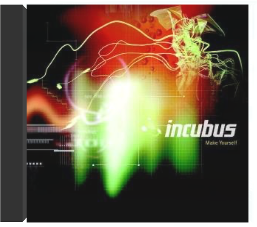

kings left behindikebe shakedown kings left behindikebe shakedown  Ten years ago, Ikebe Shakedown began pushing the boundaries of instrumental music. Each new track and live set has sent them deeper into combining the primal elements of '70s soul, raw psychedelic style, and cinematic Western soundtracks with powerful grooves and soaring melodies. Now, with their new release, Kings Left Behind (Colemine Records), the band is giving listeners more mystery and majesty than ever before. The album features the entire group collaborating to produce tracks that deliver punches right to the gut, even as dreamy guitars and lush horn melodies and string arrangements capture the imagination. The album was recorded by Ikebe's bassist, Vince Chiarito, at Hive Mind Recording. Opened with Ikebe's saxophonist, Mike Buckley, and another collaborator in 2017, Hive Mind has become a home base for the band, leading to more experimentation with the textures and sounds of a genre they define as Instrumental Soul. make yourselfincubus Un rapide coup d'oeil au CV d'Incubus permet de mieux cerner la musique du groupe. Ainsi leur metal a-t-il retenu l'attention de Les Claypool du groupe Primus et Jonathan Davis de Korn : sacrée carte de visite pour qui pratique une fusion qui les associe, côté qualité, aux leaders du genre que sont Rage Against The Machine, Fishbone et Red Hot Chili Peppers ! Prompt à réveiller un mort, Make Yourself est un coup de pied au cul marquant une étape supplémentaire dans l'ascension du groupe. Ouvert aux grooves de l'electronica funkoïde ("Battlestar Scralatchtica") comme à la drum'n'bass, ce disque fait la part belle à la voix de Brandon Boyd portée par d'énormes riffs de guitares métalliques. Décoiffant. — Hervé Comte  morning viewincubus morning viewincubus Lentement mais sûrement, Incubus, longtemps affublé de la réductrice étiquette "neo-metal", se fait un nom. Un succès largement mérité, tant le groupe fait preuve de talent et d'originalité. Ses mélodies accrocheuses sont des écrins pour la voix incroyable de Brandon Boyd (qui en plus est assez plaisant à regarder... hors sujet, peut-être, mais tellement vrai !). Mixant joyeusement rock, metal et reggae ou musique asiatique, ce quatrième album du groupe, digne successeur de Make Yourself, ne fait pas exception à la règle. Quitte à prendre le train Incubus en marche, c'est le moment ou jamais ! —Juliette Legouy  a crow left of the murderincubus a crow left of the murderincubus C'est là le grand retour d'Incubus après de nombreux déboires qui auraient pourtant pu plomber ce septième album. Outre deux procès, le départ du bassiste Dirk Lance les avaient quelque peu perturbés. Mais ce dernier étant désormais remplacé par l'excellent Ben Kenney, un transfuge de Bubba Sparxxx, Blackalicious et The Roots, Incubus repart de plus belle, avec un détonant mélange de funk et de rock épais au groove hypnotique. De son côté, le chanteur Brandon Boyd n'est pas en reste, dont la voix déchirante évoquera par endroits Mike Patton (Faith No More, Fantômas). De l'ensemble se détachent sans problèmes les percutants "Priceless" et "Pistola". Puissant ! —Hervé Comte  hq live - special editionincubus hq live - special editionincubus Last summer, over a span of six days, Incubus celebrated their 20th anniversary as a band by renting out a gallery in downtown Los Angeles to perform and connect with their fans in the most intimate of settings. The band documented this unique experience on high-quality video and stunning audio, making up the much-anticipated release, INCUBUS HQ LIVE. |


 Made with Delicious Library
Made with Delicious LibraryNancy, State zipflap congrotus delicious library Thomas, Julien